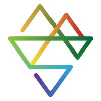

About
I am an Assistant Professor in the Faculty of Computer and Information Science at Ben-Gurion University of the Negev, where I direct the Socially Embedded Lab. Before joining BGU, I was a postdoc at the Lazer Lab at the Network Science Institute (Northeastern University) and a Research Fellow at the Institute for Quantitative Social Science (Harvard University). I received my PhD from Cornell University under the supervision of Mor Naaman.
My research investigates social behavior in large-scale, online information systems. I study areas where systems are suboptimal for people -- e.g., not meeting their needs, goals, or expectations -- and propose new computational measures to bridge the gaps. I am particularly excited about methods (machine learning, natural language processing, online panels) that extend our ability to see the online world, advance our understanding of algorithms in these spaces, and align systems with the needs of individuals and society.
Awards: BGU Teaching Innovation (2022) · BGU Teaching Excellence (2025) · BGU Research Excellence (2025)
Select publications
Below are select publications. See my lab's website and Google Scholar for the complete list of publications.
-
Supersharers of fake news on Twitter
Sahar Baribi-Bartov, Briony Swire-Thompson, and Nir Grinberg · Science, 2024
pdf -
Fake news on Twitter during the 2016 U.S. presidential election
Nir Grinberg, Kenneth Joseph, Lisa Friedland, Briony Swire-Thompson, and David Lazer · Science, 2019
pdf -

Can social media reliably estimate unemployment?Do Lee, Manuel Tonneau, Boris Sobol, Nir Grinberg, and Samuel P. Fraiberger · PNAS Nexus, 2025
pdf -
 Leveraging Exposure Networks for Detecting Fake News Sources
Leveraging Exposure Networks for Detecting Fake News SourcesMaor Reuben, Lisa Friedland, Rami Puzis, and Nir Grinberg · KDD, 2024
pdf -
Multilingual Detection of Personal Employment Status on Twitter
Manuel Tonneau, Dhaval Adjodah, João Palotti, Nir Grinberg, and Samuel P. Fraiberger · ACL, 2022
pdf -
Changes in Engagement Before and After Posting to Facebook
Nir Grinberg, P. Alex Dow, Lada A. Adamic, and Mor Naaman · CHI, 2016
pdf
Prospective students
I am always looking for motivated MSc and PhD students to join the Socially Embedded Lab at Ben-Gurion University. I am particularly interested in students with a strong quantitative background and a passion for computational social science, natural language processing, or large-scale social media analysis.
If you are interested in joining the lab, please send me an email with your recent CV, transcripts, a brief description of your research interests, and why you think we are a good fit. To stand out, please read 2-3 of my recent papers (see my lab website or Google Scholar profile) and describe what methodological aspects of our work excite you.